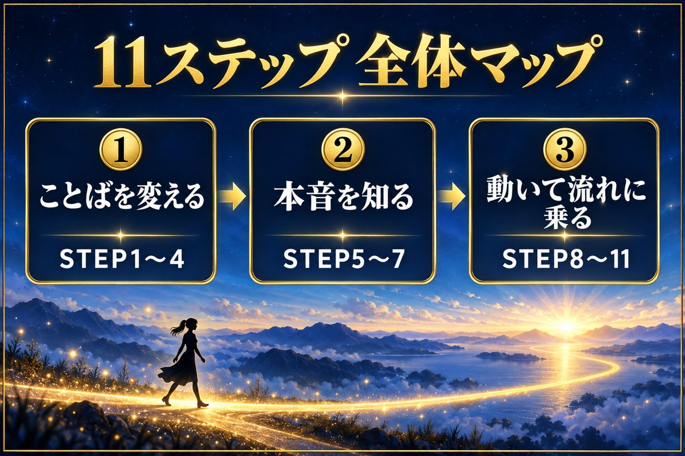

図解つきワークつき誰でもできるぜんぶ無料
手取り14万で、リボ払いに追われていた私が、年商10億の社長さんから教わって、毎日やってきたことをまとめました。むずかしい知識はいりません。上から順番に読んで、ワークを進めるだけです。
はじめての人へ ― このページの使い方
・上のタブで、3つの段階を切りかえられます。最初は「すべて」のまま、STEP 1から読むのがおすすめです。
・気になるステップは「保存」を押すと、「保存済み」のタブにまとまります。
・ワークをやったら「やった」にチェック。このページを開くたびに、何個やったかが分かります。
・文字が小さいときは、右上の「A」で大きくできます。

億り女ちゃん｜秘密の花園 参加特典